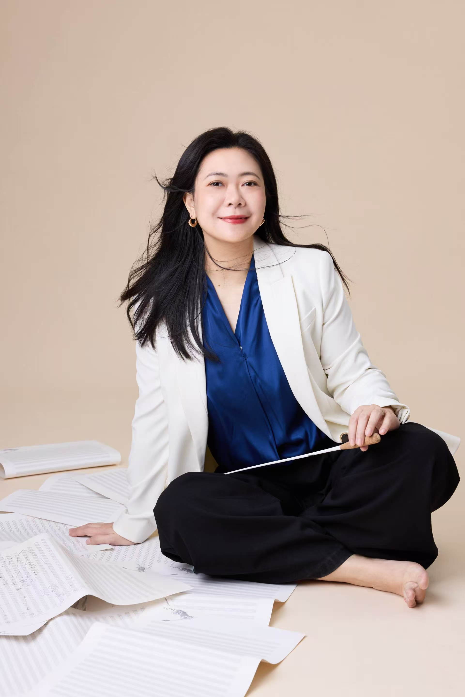

Biography

Chris WU, GUANQING is an active composer, conductor and journalist from Hong Kong, China. She is the winner of various competitions and recipient of commissions from renowned music groups. Her music is poetic, compelling, and full of dramatic contrast.
Her principal compositional teachers include YE Guohui, Victor CHAN, Wendy LEE, CHEN Yi, ZHOU Long, and Fred Lerdahl. Her music has been widely performed and well-received in Europe, the United States, and Asia. Orchestras and ensembles she has worked with include the Hong Kong Philharmonic Orchestra, Shanghai Philharmonic Orchestra, The City Chamber Orchestra (HK), Nieuw Ensemble (Netherlands), Portumnus (U.K.), Ensemble Tag (Switzerland), Hong Kong New Music Ensemble, and Con Tempo (Beijing), among others. Her chamber work La Ronde was featured in the Chinese Composers' Festival and selected as the representative piece of the Hong Kong region to participate in the UNESCO International Composers Rostrum in Helsinki, Finland.
As a writer and scholar, her recent research focuses on contemporary Chinese composers, environmental music, and Eco-musicology. Her research has been awarded the Z.Yin Advanced Research Fellowship (CUHK) and the Shanghai Postdoctoral Special Funding. WU is also an active conductor; she has worked with the Lithuania Symphonic Orchestra, Hong Kong Director's Band, Han Ensemble, and Bauhinia Youth Choir.